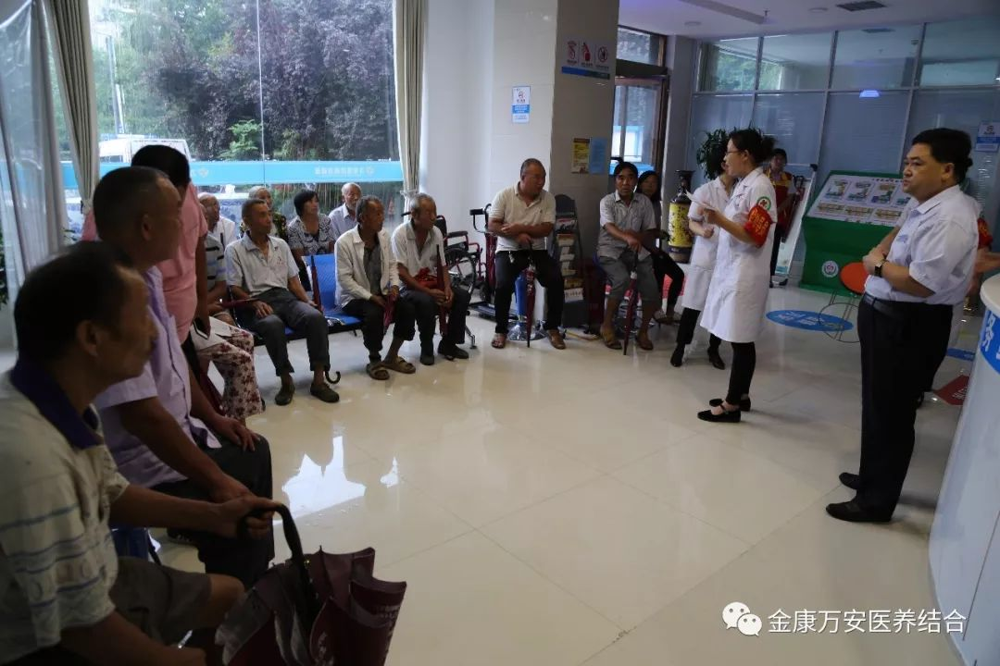
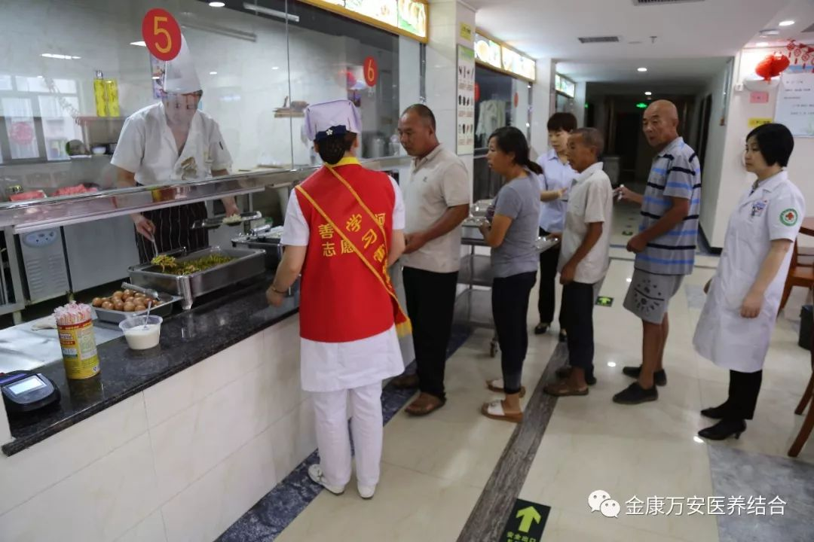
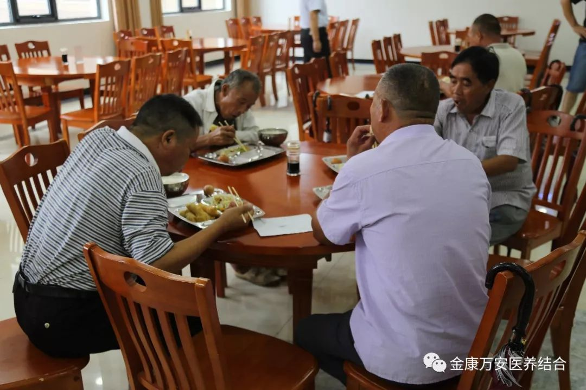
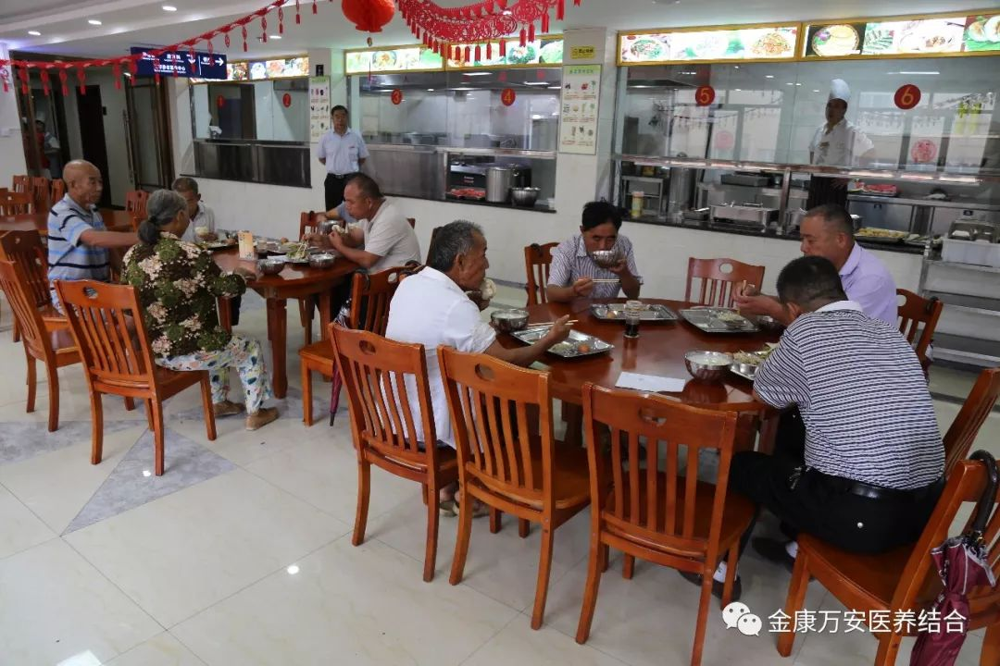

为深入贯彻省、市脱贫攻坚推进会议精神，形成强大脱贫攻坚合力，打赢脱贫攻坚战， 进一步提升医疗服务行动，落实区委关于健康扶贫工作的指示精神，积极做好健康扶贫工作，更好地解决贫困村民看病难、看病贵、看病远等实际问题，帮助所需人员尽快脱离因病致贫、因病返贫的困境，漯河金康护理院、漯河万安医院于8月4日开展为对口帮扶老窝镇古同村的18位贫困村民及五保老人进行免费体检活动。
召陵区老窝镇古同村是漯河金康护理院、漯河万安医院医疗帮扶对口支援村，早在七月份的时候，金康万安两院就派医疗专家走进古同村进行“天使减贫”助力医疗脱贫攻坚大型义诊活动，受到了当地村民的热烈欢迎与高度赞扬，由于义诊当天人员较多，有部分村民没有享受到医疗帮扶，回来之后，王卫峰院长时刻惦记着古同村的村民，积极地与当地村干部联系，把未体检的贫困村民及五保老人接到漯河万安医院进行免费体检。
考虑到大多数都是腿脚不方便的老人，我院精心筹备，专门安排3部车辆免费为18名扶贫对象进行接送，并全程陪护。
天空下着大雨，王卫峰院长早早的就带领相关工作人员做好准备工作，在门诊大厅迎接体检人员的到来。
因考虑大家体检需抽血，不能吃早饭，王卫峰院长提前部署，安排膳食科人员一早为18名扶贫人员准备了豆浆、油条、鸡蛋等丰富的早餐。
  一位73岁的老大爷激动地说：“万安医院专车免费接送，还为我们准备吃的，真是比儿女还上心”。
王院长说，此次为召陵区古同村贫困村民及五保户进行医疗帮扶免费体检活动，是我院进行精准扶贫、健康扶贫的一个开始，今后我们将会继续对帮扶村开展送医下乡活动，用实际行动落实精准扶贫、健康扶贫服务，为百姓健康保驾护航，切实为百姓解决因病致贫、因病返贫做出我们应有的贡献。